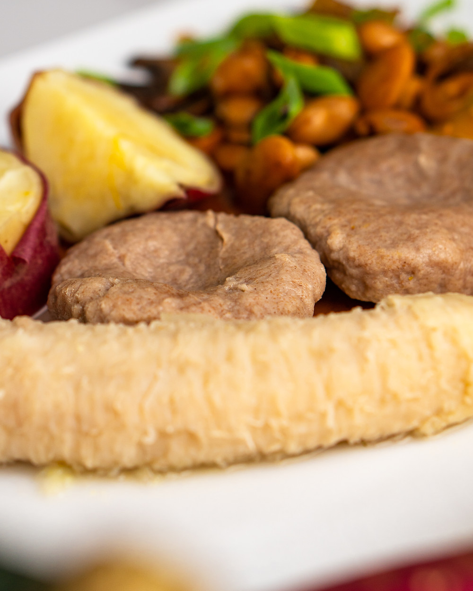

Michael's Provision Recipe
Back

Description
This provision recipe makes for a good breakfast. Packed
with nutrients, protein, and a variety of different foods
that hold their own benefits, this dish will keep you
full for a majority of the day.
Ingredients
- Kingfish
- All purpose seasoning
- Salt
- Black pepper
- Onion powder
- Garlic powder
- Bananas
- Yams
- Potatoes
- Flour
Steps
- Clean the fish thoroughly. Wash and scale your fish.
- Season with all purpose seaosning, black pepper,
salt, onion powder, and garlic powder.
- Oil a pan and start a fire on medium.
- Place fish in the pan after it's heated.
- Set a pot to boil for the remaining ingredients and
fill it halfway with water.
- Slit the bananas 3 ways so when they boil you can
peel the skin off easily.
- Peel and cut the yams and add to the boiling pot.
- Peel and cut the potatoes and add to the pot.
- Add bananas to the pot.
- Mix flour water and salt in a bowl for dumplings
- Add dumplings to boiling pot.
- Leave the pot to boil for 45 minutes and then your
meal is done.